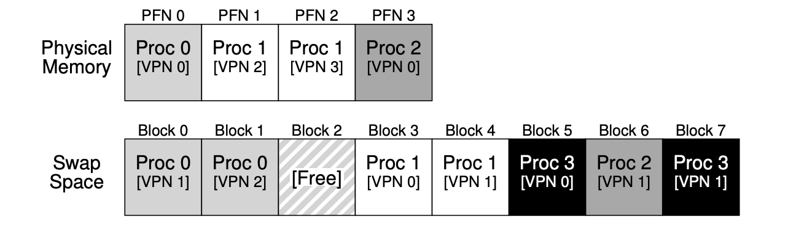
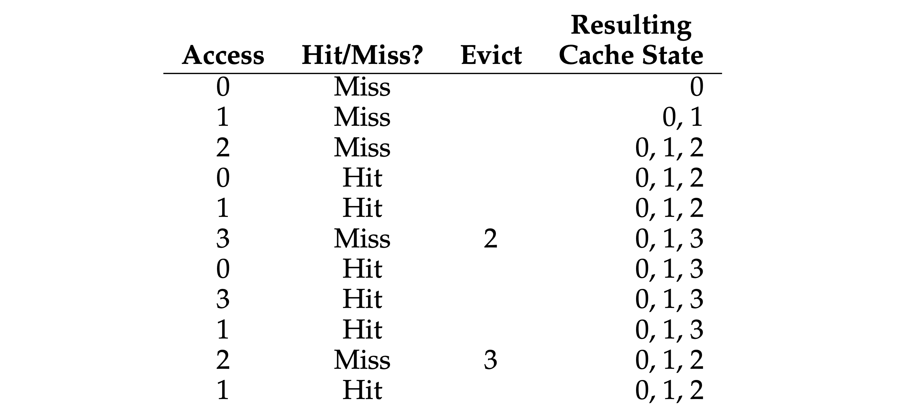
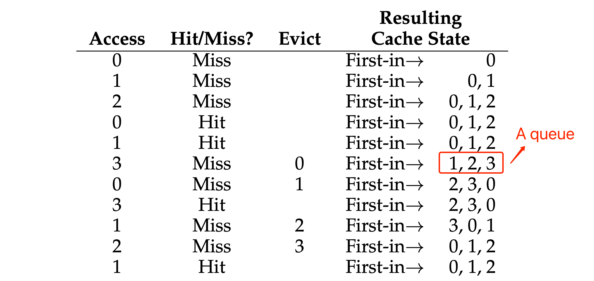
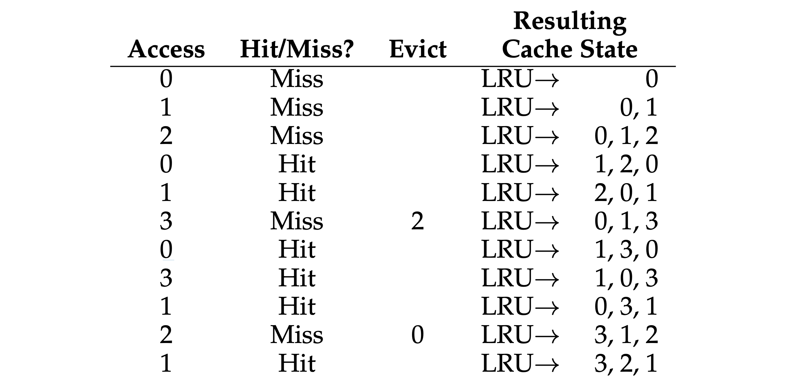
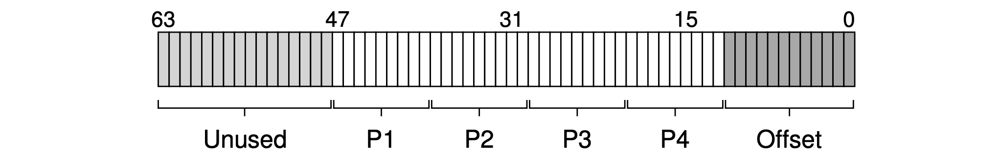
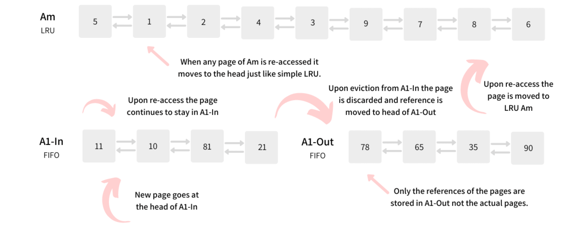
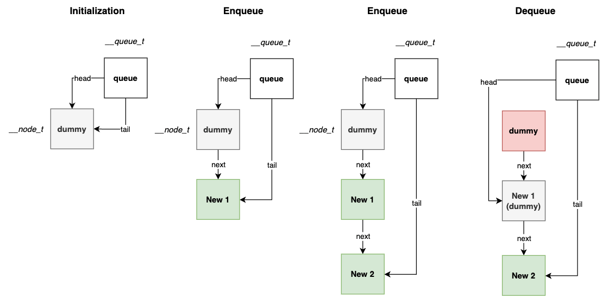

《Operating Systems: Three Easy Pieces》读书笔记（第 21-29 章）
书接上回，本文是第 21-29 章的笔记。内容基于自身情况记录，仅供参考，Dialogue 的相关章节已略过。
Chapter 21: Beyond Physical Memory - Mechanisms
- Swap space: some space on the disk for moving pages back and forth (memory <-> disk).

- Add the “present bit“ in each PTE (page-table entry), to indicate whether the page is present in the physical memory. If it’s set to 0, the page is not in memory but rather on disk somewhere, and it should be retrieved by “page fault“ (not only for swapping, but also for on-demand binary loading). When people say a program is “page faulting”, they mean that it is accessing parts of its virtual address space that the OS has swapped out to disk.
- Basic steps:
// Page-Fault Control Flow Algorithm (Hardware).
VPN = (VirtualAddress & VPN_MASK) >> SHIFT
(Success, TlbEntry) = TLB_Lookup(VPN)
if (Success == True) // TLB Hit
if (CanAccess(TlbEntry.ProtectBits) == True)
Offset = VirtualAddress & OFFSET_MASK
PhysAddr = (TlbEntry.PFN << SHIFT) | Offset
Register = AccessMemory(PhysAddr)
else
RaiseException(PROTECTION_FAULT)
else // TLB Miss
PTEAddr = PTBR + (VPN * sizeof(PTE))
PTE = AccessMemory(PTEAddr)
if (PTE.Valid == False)
RaiseException(SEGMENTATION_FAULT)
else
if (CanAccess(PTE.ProtectBits) == False)
RaiseException(PROTECTION_FAULT)
else if (PTE.Present == True)
// assuming hardware-managed TLB
TLB_Insert(VPN, PTE.PFN, PTE.ProtectBits)
RetryInstruction()
else if (PTE.Present == False)
RaiseException(PAGE_FAULT)
// Page-Fault Control Flow Algorithm (Software).
PFN = FindFreePhysicalPage()
if (PFN == -1) // no free page found
PFN = EvictPage() // replacement algorithm
DiskRead(PTE.DiskAddr, PFN) // sleep (wait for I/O)
PTE.present = True // update page table:
PTE.PFN = PFN // (present/translation)
RetryInstruction() // retry instruction
- Page replacement policy: the process of picking a page to kick out, or replace.
- Further improvements: to keep a small amount of memory free, most operating systems thus have some kind of high watermark (HW) and low watermark (LW) to help decide when to start evicting pages from memory. How this works is as follows: when the OS notices that there are fewer than LW pages available, a background thread that is responsible for freeing memory runs. The thread evicts pages until there are HW pages available. The background thread, sometimes called the swap daemon, then goes to sleep, happy that it has freed some memory for running processes and the OS to use. By performing a number of replacements at once, new performance optimizations become possible. For example, many systems will cluster a number of pages and write them out at once to the swap partition, thus increasing the efficiency of the disk; as we will see later when we discuss disks in more detail, such clustering reduces seek and rotational overheads of a disk and thus increases performance noticeably.
Chapter 22: Beyond Physical Memory - Policies
- Average memory access time (AMAT): AMAT = TM + (PMiss · TD)
- TM: the cost of accessing memory.
- TD: the cost of accessing disk.
- PMiss (varies from 0.0 to 1.0): the probability of not finding the data in the cache (a miss).
- “Optimal Replacement” policy: replaces the page that will be accessed furthest in the future, this policy only serves as a comparison point for other approaches since it should know the future state, and then compute into the perfect result.

- “FIFO” policy: pick the page that was the “first one” in (the cache state in the below figure is kept in FIFO order, with the first-in page on the left).

- “Random” policy: picks a random page to replace under memory pressure, doesn’t have any weird corner-case behaviors (.e.g with a “looping sequential” workload).
- “LRU (Least-Recently-Used)” policy: replaces the least-recently-used page when an eviction must take place. In a approximated LRU, it requires some hardware support in the form of a use bit. Whenever a page is referenced (i.e., read or written), the use bit is set by hardware to 1. The hardware never clears the bit, though (i.e., sets it to 0); that is the responsibility of the OS. With clock algorithm, all the pages of the system arranged in a circular list. A clock hand points to some particular page to begin with (it doesn’t really matter which). When a replacement must occur, the OS checks if the currently-pointed to page P has a use bit of 1 or 0, and also has a dirty bit (meaning the page hasn’t been changed, don’t need to write back via I/O) of 0. If 1, this implies that page P was recently used and thus is not a good candidate for replacement. Thus, the use bit for P is set to 0 (cleared), and the clock hand is incremented to the next page (P + 1). The algorithm continues until it finds a use bit that is set to 0, implying this page has not been recently used.

- Thrashing: occurs in a system with virtual memory when a computer’s real storage resources are overcommitted, leading to a constant state of paging and page faults, slowing most application-level processing. A system thrashing is often a result of a sudden spike in page demand from a small number of running programs. Swap-toke is a lightweight and dynamic thrashing protection mechanism. The basic idea is to set a token in the system, which is randomly given to a process that has page faults when thrashing happens. The process that has the token is given a privilege to allocate more physical memory pages to build its working set, which is expected to quickly finish its execution and release the memory pages to other processes. A timestamp is used to hand over the tokens one by one.
Chapter 23: Complete Virtual Memory Systems
Demand zeroing: the OS does very little work when the page is added to your address space, it puts an entry in the page table that marks the page inaccessible (only bookkeeping here). If the process then reads or writes the page, a trap into the OS takes place. When handling the trap, the OS notices (usually through some bits marked in the “reserved for OS” portion of the page table entry) that this is actually a demand-zero page; at this point, the OS does the needed work of finding a physical page, zeroing it, and mapping it into the process’s address space. If the process never accesses the page, all such work is avoided.
The Linux address space:
- Page 0 is marked invalid in order to avoid illegal access via a NULL pointer.
- 2 types of kernel virtual addresses:
- Logical address: increase size via
kmalloc, most kernel data structures live here, such memory cannot be swapped to disk. There is a direct mapping between kernel logical addresses and the first portion of physical memory:- It’s simple to translate back and forth between kernel logical addresses and physical addresses.
- If a chunk of memory is contiguous in kernel logical address space, it is also contiguous in physical memory. This makes memory allocated in this part of the kernel’s address space suitable for operations which need contiguous physical memory to work correctly, such as I/O transfers to and from devices via DMA.
- Virtual address: increase size via
vmalloc, such memory usually is not contiguous but easier to allocate as a result.
- Logical address: increase size via
- Virtual address structure:
- The top 16 bits are ununsed.
- The bottom 12 bits are used as the offset (4KB).
- The middle 36 bits are used for translation.

- Support of huge pages (2MB ~ 1GB):
- Pros:
- Reduce the size of the page table.
- Reduce TLB miss rate.
- A shorter TBL-miss lookup path.
- Cons:
- Severe Internal fragmentation.
- Costly swapping.
- Pros:
- Memory page sources:
- Memory-mapped files.
- File data and metadata from devices.
- Heap/stack pages (anonymous memory).
- 2Q algorithm: just because a page is accessed once does not entitle it to stay in the buffer. Instead, it should be decided if it is accessed again then only keep it in the buffer.

Chapter 26: Concurrency: An Introduction
- Thread:
- Thread states are saved into TCB (Thread Control Block).
- When context switch occurs, the address space remains the same.
- The stack of each thread is running independently (thread-local storage).
- When do we use thread?
- For speeding up the execution by parallelization (.e.g SIMD).
- For reusing computational resources when pending on I/O.
- Critical section: is a piece of code that accesses a shared variable, or more generally, a shared resource. We need each thread to have “mutual exclusion“ before entering this area. Ways to solve this issue:
- Atomic instruction: use atomic instructions, these ones could not be interrupted mid-instruction, because that is precisely the guarantee we receive from the hardware: when an interrupt occurs, either the instruction has not run at all, or it has run to completion; there is no in-between state. These basic instructions can be used for building synchronization primitives.
- Condition variables: the sleeping/waking interaction.
Chapter 27: Interlude: Thread API
（略）
Chapter 28: Locks
- Spin/yield lock implementations:
- Turning off interrupts before entering a critical section: only used in limited contexts (.e.g OS internal) as a mutual-exclusion primitive.
- Pros: simplicity.
- Cons:
- Require calling thread to perform a privileged operations which is risky.
- It doesn’t work on multiprocessors.
- Turning off interrupts for extended periods of time can lead to interrupts becoming lost.
- The spinlock with test-and-set instruction. This way only works with a preemptive scheduler, otherwise a thread spinning on a CPU will never relinquish it.
- Pros: simplicity, with minor hardware support.
- Cons:
- It doesn’t provide any fairness guarantees, meaning a thread may get starved (suppose processA start to execute the while loop when processB is already inside the critical section. If processA always exits and enters the critical section within this time interval, then processA will never succeed in entering critical section).
- The performance overheads can be quite painful on a single processor CPU.
typedef struct __lock_t {
int flag;
} lock_t;
void init(lock_t *lock) {
// 0: lock is available, 1: lock is held.
lock->flag = 0;
}
void lock(lock_t *lock) {
while (TestAndSet(&lock->flag, 1) == 1) // The "test" and "set" operations are done atomically.
; // spin-wait (do nothing).
}
void unlock(lock_t *lock) {
lock->flag = 0;
}
- The spinlock with compare-and-swap (compare-and-exchange) instruction.
void lock(lock_t *lock) {
// int CompareAndSwap(int *ptr, int expected, int new).
// Change the value at *ptr to "new", if the value of *ptr equals to "expected", then return the original value.
while (CompareAndSwap(&lock->flag, 0, 1) == 1)
; // Spin.
}
- The spinlock with load-linked and store-conditional (LL/SC) instructions. The load-linked operates much like a typical load instruction, and the store-conditional only succeeds if no intervening store to the address has taken place.
void lock(lock_t *lock) {
while (1) {
while (LoadLinked(&lock->flag) == 1)
; // Spin until it’s zero.
if (StoreConditional(&lock->flag, 1) == 1)
return; // If set-to-1 was success: done.
// Otherwise: try again.
}
}
- The ticket lock with fetch-and-add instruction, this way prevents the happening of starvation.
typedef struct __lock_t {
int ticket;
int turn;
} lock_t;
void lock_init(lock_t *lock) {
lock->ticket = 0;
lock->turn = 0;
}
void lock(lock_t *lock) {
int myturn = FetchAndAdd(&lock->ticket);
while (lock->turn != myturn)
; // Spin.
}
void unlock(lock_t *lock) {
lock->turn = lock->turn + 1;
}
- The lock with test-and-set and yield:
- Pros: it’s more slightly efficient than spinlock.
- Cons: it doesn’t provide any fairness guarantees, meaning a thread may get starved.
void init() {
flag = 0;
}
void lock() {
while (TestAndSet(&flag, 1) == 1)
yield(); // Give up the CPU, turn the calling thread into the "ready" state.
}
void unlock() {
flag = 0;
}
- An efficient lock implementation: combine the old test-and-set idea with an explicit queue of lock waiters.
typedef struct __lock_t {
int flag;
int guard;
queue_t *q;
} lock_t;
void lock_init(lock_t *m) {
m->flag = 0;
m->guard = 0;
queue_init(m->q);
}
void lock(lock_t *m) {
while (TestAndSet(&m->guard, 1) == 1)
; // Acquire guard lock by spinning, for protecting below critical section.
if (m->flag == 0) {
// Lock is acquired, this line is only used for the first thread getting the lock, -
// for the thread that is woken up, the lock will be "passed" to it.
m->flag = 1;
m->guard = 0;
} else {
queue_add(m->q, gettid());
m->guard = 0;
// The calling thread is about to park. If it then happens to be interrupted, -
// and another thread calls unpark before park is actually called, -
// the subsequent park returns immediately instead of sleeping.
setpark();
// park(); // This will cause a "wakeup/waiting race".
}
}
void unlock(lock_t *m) {
while (TestAndSet(&m->guard, 1) == 1)
; // Acquire guard lock by spinning, for protecting below critical section.
if (queue_empty(m->q))
m->flag = 0; // Let go of lock; no one wants it.
else
unpark(queue_remove(m->q)); // Hold lock.
// (for next thread!).
m->guard = 0;
}
- The Linux “futex“: it provides more in-kernel functionality, each futex has associated with it a specific physical memory location, as well as a per-futex in-kernel queue.
void mutex_lock(int *mutex) {
int v;
// Bit 31 was clear, we got the mutex (fastpath)
if (atomic_bit_test_set(mutex, 31) == 0)
return;
atomic_increment(mutex);
while(1) {
if (atomic_bit_test_set(mutex, 31) == 0) {
atomic_decrement(mutex);
return;
}
// Have to waitFirst to make sure futex value we are monitoring is negative (locked).
// Firstly, it spins for a while, hoping that the calling thread can acquire the lock.
v = *mutex;
if (v >= 0)
continue;
// Secondly, puts the calling thread to sleep with syscall, -
// assuming the values of the two passing arguments are equal. Otherwise, it returns immediately.
/*
The purpose of the comparison (*mutex) with the expected value (v) is to prevent lost wake-ups.
If another thread changed the value of the futex word after the calling thread decided -
to block based on the prior value, and if the other thread executed a FUTEX_WAKE operation -
(or similar wake-up) after the value change and before this FUTEX_WAIT operation, -
then the calling thread will observe the value change and will not start to sleep.
*/
futex_wait(mutex, v);
}
}
void mutex_unlock(int *mutex) {
// Adding 0x80000000 to counter results in 0 if and
// only if there are not other interested threads
if (atomic_add_zero(mutex, 0x80000000)) // Clear bit 31.
return;
// There are other threads waiting for this mutex, wake one of them up.
futex_wake(mutex);
}
- Two-phase lock: which realizes that spinning can be useful, particularly if the lock is about to be released. So in the first phase, the lock spins for a while, hoping that it can acquire the lock. However, if the lock is not acquired during the first spin phase, a second phase is entered, where the caller is put to sleep, and only woken up when the lock becomes free later.
Chapter 29: Lock-based Concurrent Data Structures
- Approximate counter: it works by representing a single logical counter via numerous local physical counters, one per CPU core, as well as a single global counter. In addition to these counters, there are also locks: one for each local counter, and one for the global counter. When a thread running on a given core wishes to increment the counter, it increments its local counter; access to this local counter is synchronized via the corresponding local lock. Because each CPU has its own local counter, threads across CPUs can update local counters without contention, and thus updates to the counter are scalable. However, to keep the global counter up to date (in case a thread wishes to read its value), the local values are periodically transferred to the global counter, by acquiring the global lock and incrementing it by the local counter’s value; the local counter is then reset to zero.
typedef struct __counter_t {
int global; // Global count.
pthread_mutex_t glock; // Global lock.
int local[NUMCPUS]; // Per-CPU count.
pthread_mutex_t llock[NUMCPUS]; // Per-CPU locks.
int threshold; // Update freq.
} counter_t;
// Init: record threshold, init locks, init values of all local counts and global count.
void init(counter_t *c, int threshold) {
c->threshold = threshold;
c->global = 0;
pthread_mutex_init(&c->glock, NULL);
int i;
for (i = 0; i < NUMCPUS; i++) {
c->local[i] = 0;
pthread_mutex_init(&c->llock[i], NULL);
}
}
// Update: usually, just grab local lock and update local amount;
// Once it has risen ’threshold’, grab global lock and transfer local values to it.
void update(counter_t *c, int threadID, int amt) {
int cpu = threadID % NUMCPUS;
pthread_mutex_lock(&c->llock[cpu]);
c->local[cpu] += amt;
if (c->local[cpu] >= c->threshold) {
// Transfer to global (assumes amt > 0).
pthread_mutex_lock(&c->glock);
c->global += c->local[cpu];
pthread_mutex_unlock(&c->glock);
c->local[cpu] = 0;
}
pthread_mutex_unlock(&c->llock[cpu]);
}
// Get: just return global amount (approximate).
int get(counter_t *c) {
pthread_mutex_lock(&c->glock);
int val = c->global;
pthread_mutex_unlock(&c->glock);
return val; // Only approximate!
}
- Concurrent linked list: one technique that researchers have explored to enable more concurrency within a list is something called “hand-over-hand locking“. But in practice, it is hard to make such a structure faster than the simple single lock approach, as the overheads of acquiring and releasing locks for each node of a list traversal is prohibitive.
// Basic node structure.
typedef struct __node_t {
int key;
struct __node_t *next;
} node_t;
// Basic list structure (one used per list).
typedef struct __list_t {
node_t *head;
pthread_mutex_t lock;
} list_t;
void List_Init(list_t *L) {
L->head = NULL;
pthread_mutex_init(&L->lock, NULL);
}
int List_Insert(list_t *L, int key) {
// Synchronization not needed.
node_t *new = malloc(sizeof(node_t));
if (new == NULL) {
perror("malloc");
return -1;
}
new->key = key;
pthread_mutex_lock(&L->lock); // Just lock critical section.
new->next = L->head;
L->head = new;
pthread_mutex_unlock(&L->lock);
return 0;
}
int List_Lookup(list_t *L, int key) {
int rv = -1;
pthread_mutex_lock(&L->lock);
node_t *curr = L->head;
while (curr) {
if (curr->key == key) {
rv = 0;
break;
}
curr = curr->next;
}
pthread_mutex_unlock(&L->lock);
return rv; // Now both success and failure.
}
- Concurrent queue: two locks here, one for the head of the queue, and one for the tail. And the dummy node added in the queue initialization phase that enables the separation of head and tail operations.

typedef struct __node_t {
int value;
struct __node_t *next;
} node_t;
typedef struct __queue_t {
node_t *head;
node_t *tail;
pthread_mutex_t head_lock, tail_lock;
} queue_t;
void Queue_Init(queue_t *q) {
// A dummy node that enables the separation of head and tail operations.
node_t *tmp = malloc(sizeof(node_t));
tmp->next = NULL;
q->head = q->tail = tmp;
pthread_mutex_init(&q->head_lock, NULL);
pthread_mutex_init(&q->tail_lock, NULL);
}
void Queue_Enqueue(queue_t *q, int value) {
node_t *tmp = malloc(sizeof(node_t));
assert(tmp != NULL);
tmp->value = value;
tmp->next = NULL;
pthread_mutex_lock(&q->tail_lock);
q->tail->next = tmp;
q->tail = tmp;
pthread_mutex_unlock(&q->tail_lock);
}
int Queue_Dequeue(queue_t *q, int *value) {
pthread_mutex_lock(&q->head_lock);
node_t *tmp = q->head;
node_t *new_head = tmp->next;
if (new_head == NULL) {
pthread_mutex_unlock(&q->head_lock);
return -1; // Queue was empty.
}
*value = new_head->value;
q->head = new_head;
pthread_mutex_unlock(&q->head_lock);
free(tmp);
return 0;
}
- Concurrent hash table: based on concurrent list. It uses a lock per hash bucket (each of which is represented by a list). Doing so enables many concurrent operations to take place.
#define BUCKETS (101)
typedef struct __hash_t {
list_t lists[BUCKETS];
} hash_t;
void Hash_Init(hash_t *H) {
int i;
for (i = 0; i < BUCKETS; i++)
List_Init(&H->lists[i]);
}
int Hash_Insert(hash_t *H, int key) {
return List_Insert(&H->lists[key % BUCKETS], key);
}
int Hash_Lookup(hash_t *H, int key) {
return List_Lookup(&H->lists[key % BUCKETS], key);
}
评论 | Comments